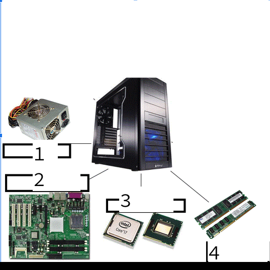

Vous arrivez au hangard,
Tom vous annonce qu'il n'a pas noté les noms des composants à récupérer, il n'a que ça :

Il souvient uniquement du premier élément, pouvez-vous l'aider à retrouver les noms des autres composants :
1
2
3
4